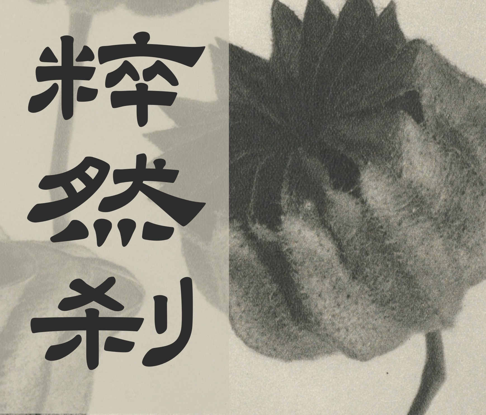
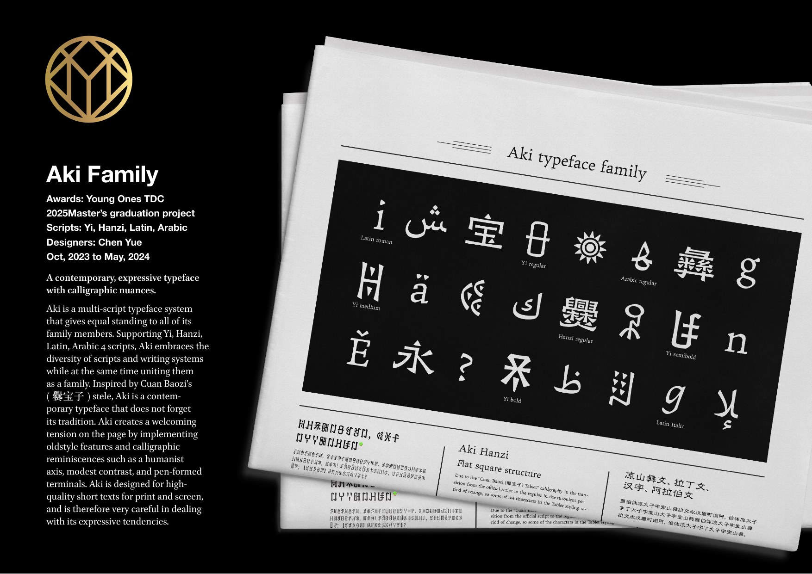
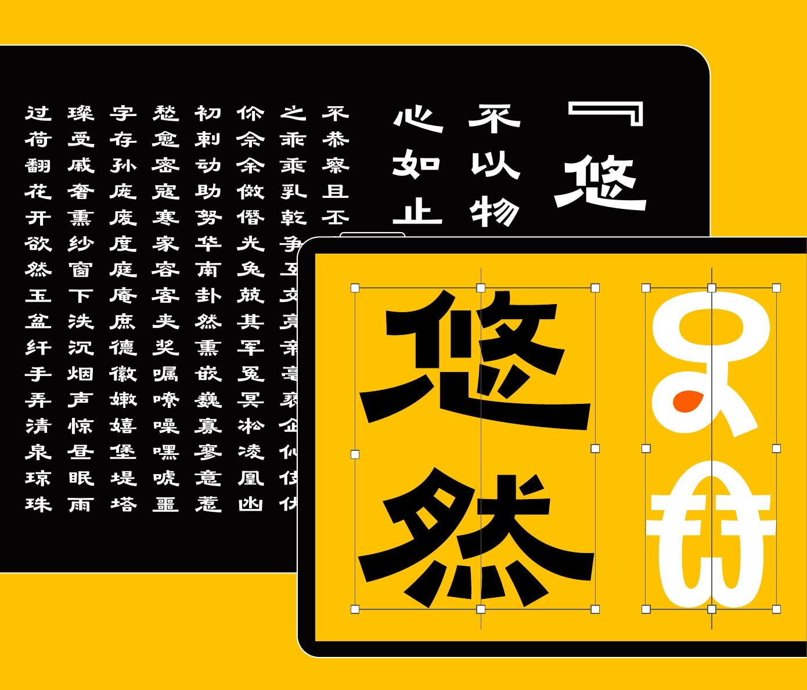
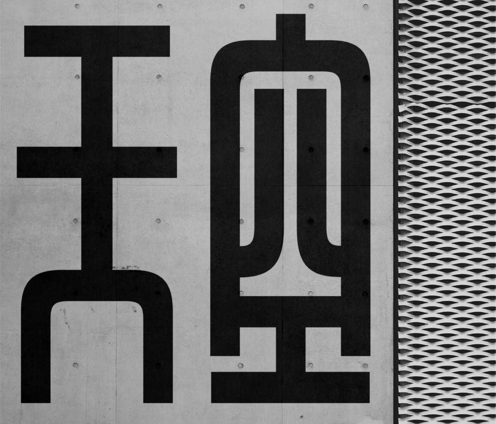
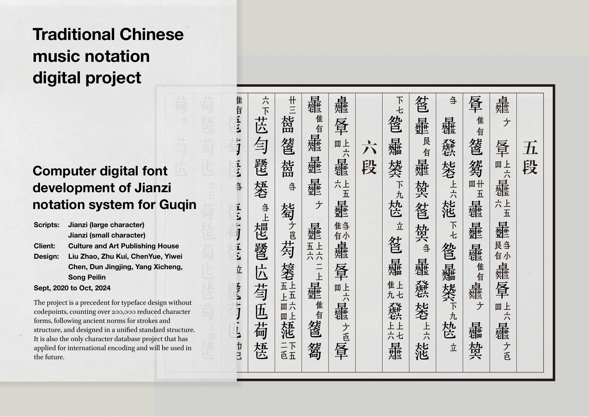

Conference Presentation
/gʁafematik/ 2026
Establishing comparable writing units in a non-unified writing system: a grapholinguistic approach based on ideographic Yi

Conference Presentation
Establishing comparable writing units in a non-unified writing system: a grapholinguistic approach based on ideographic Yi

Conference Presentation
From Fragmentation to Belonging: The Development and Standardization of the Yi Script in Southwest China
Conference Presentation
Participatory Visuality in Yi Script: Minority Writing and Cultural Engagement in China

Course Lecture
Western Typeface Design

Academic Forum
The Development of Hanyu Pinyin and Its Application Challenges in Type Design
Forum Talk
The Story of Pinyin

Lecture
The Modern Path of Chinese Character Design
Cultural Event Talk
The Story of Yi Script
Academic Symposium
Letterform Design in Oracle Bone Script Picture Books